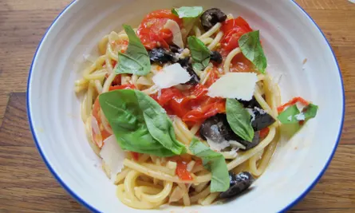

Putnesca

Description
What a lovely name for a lovely pasta
there are two thingh which smell like anchois one of them is onchois
Ingridients
- 4 cloves of garlic
- 1 small handful of black olives
- 2 handfuls of cherry tomatoes
- 2 fresh red chillies
- some fresh basil
- pasta fresca
- anchois
- parmesan
Steps
- Bring a large pan of salted water to the boil. Meanwhile, peel and finely slice the garlic, destone the olives, and halve the cherry tomatoes. Slice the chillies and pick the basil leaves.
- Add the spaghetti to the pan of boiling salted water and cook according to the packet instructions.
- Place a large frying pan over a medium–high heat, drizzle in a good lug of olive oil, add the garlic and chilli, then tear in the anchovies and olives and stir for 2 minutes, or until the garlic starts to turn golden and the anchovies melt into the base
- Add the cherry tomatoes, a good splash of pasta water and cover with a lid. Cook for 3 to 4 minutes, or until the cherry tomatoes start to cook down slightly.
- Drain the pasta, reserving a cupful of cooking water. Add the basil to the sauce along with the pasta and a splash of the reserved cooking water, to loosen.
- Have a taste and season, if needed. Transfer to a serving platter and top with a good shaving of fresh Parmesan.